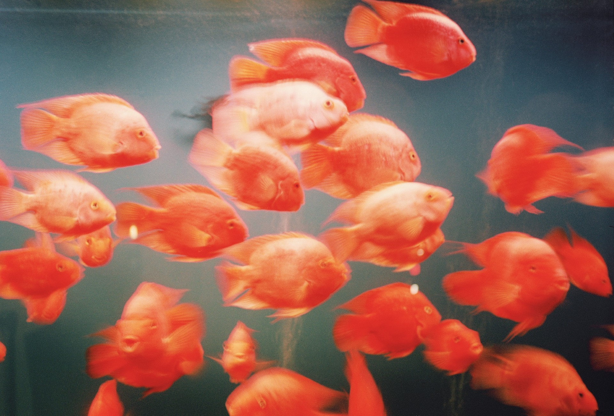
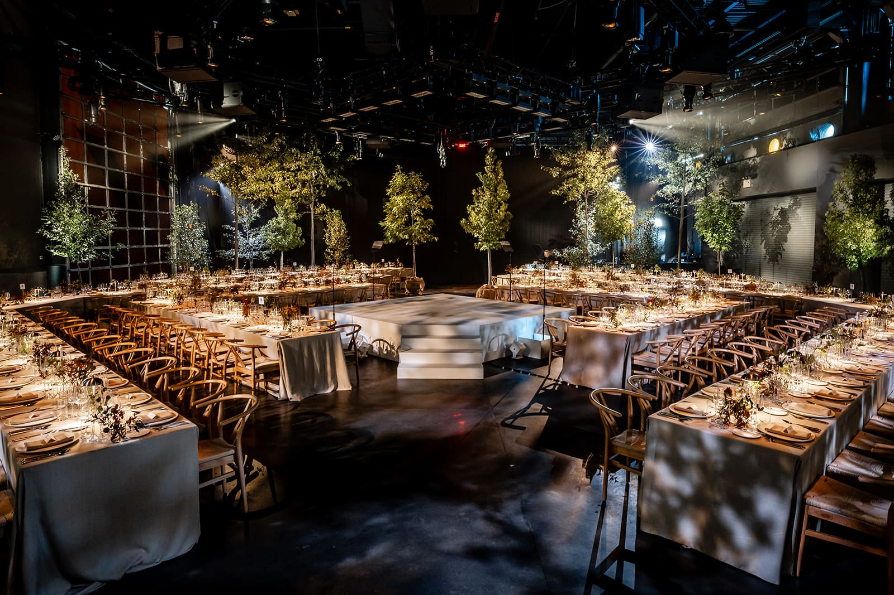
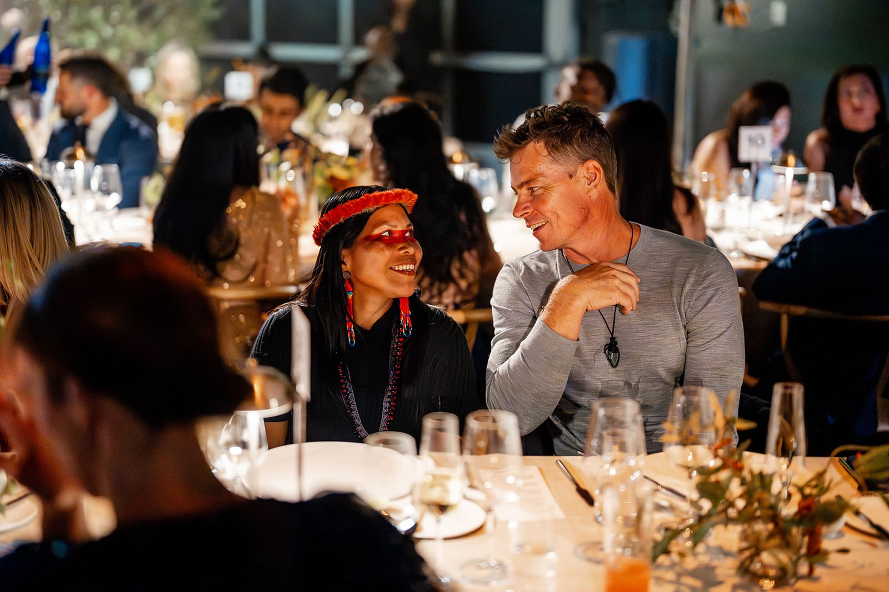
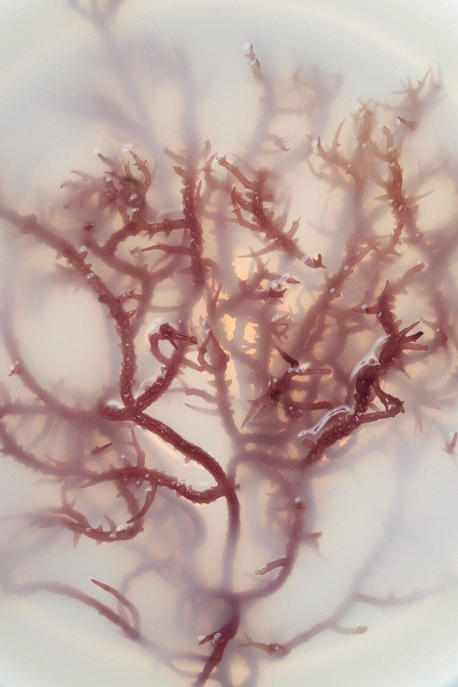
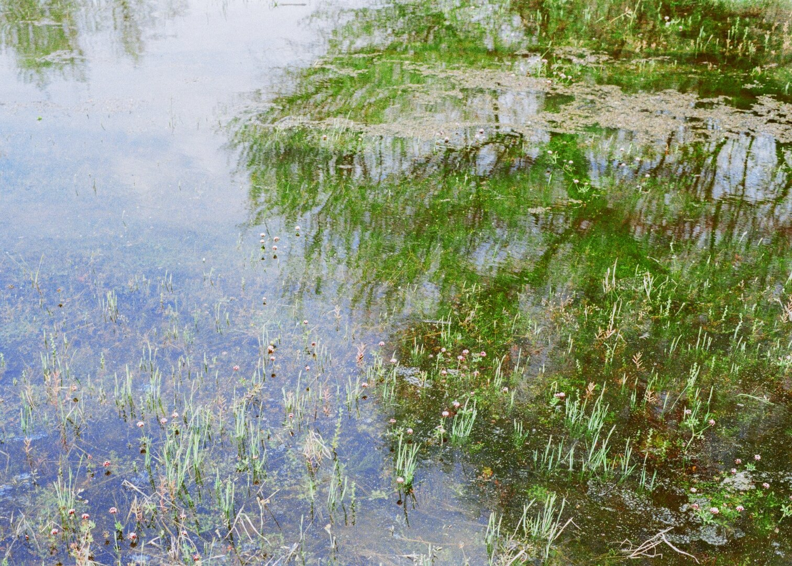

Online
Give Online
Make a secure one-time or monthly gift through our BetterWorld donation page. You’ll receive a tax receipt by email straight away.
Give on BetterWorld
Support THE NAT
Your gift to THE NAT FUND powers our mission into 2027: bringing capital, conservation and culture together to move money into nature-positive systems at the speed culture moves.
THE NAT FUND (Nat Fund, Inc.) is a registered 501(c)(3) nonprofit, EIN 33-4912322. Donations are tax-deductible as allowed by law.
Kyle Weeks
In two years, THE NAT has turned attention into action for nature. Your support helps us go further in 2027.



Every gift goes to THE NAT FUND and supports our work to close the nature finance gap.
Online
Make a secure one-time or monthly gift through our BetterWorld donation page. You’ll receive a tax receipt by email straight away.
Give on BetterWorldDonor-Advised Funds
Recommend a grant to THE NAT FUND by contacting your fund sponsor with these details:
Please ask your sponsor to include your name and contact details so we can thank you.
Partnerships
Companies and foundations can support THE NAT through sponsorship of our high culture events, the Solutions Series and our 2027 convenings.
Talk to our teamThis information is not offered as legal or tax advice. Please consult your tax advisor about your own circumstances.

Our team is happy to help with any question about donating to THE NAT FUND.
Kin Coedel
Photography — Kyle Weeks, Lee-Ann Olwage, Kin Coedel · GALA photography courtesy of THE NAT